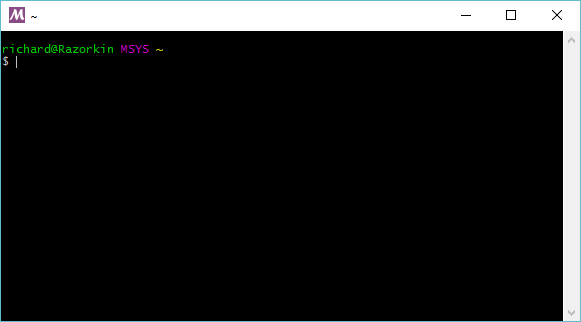
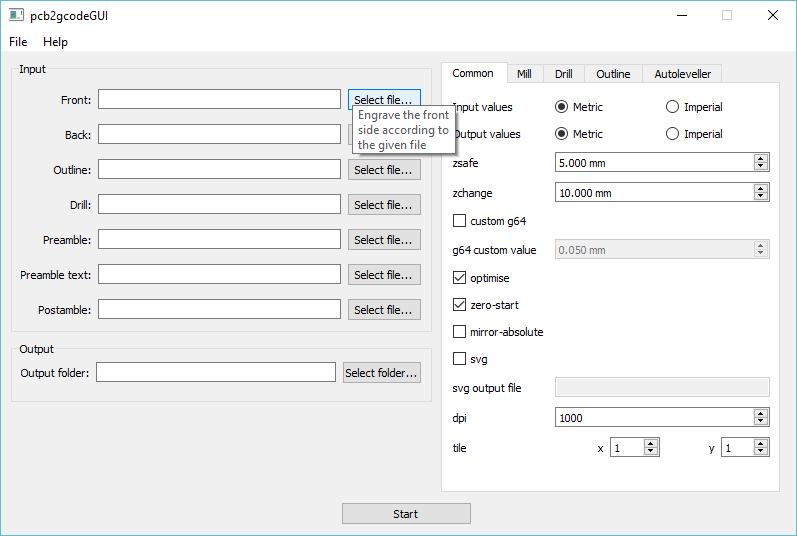

Building PCB2GCode
Setting up MSYS2
In order to build PCB2GCode under windows we need to use MSYS2
You can download the windows installer from one of the below links, for this doc I’ll be using the x64 version under Windows 10
After running the windows installer, open a MSYS2 prompt and run the following commands

pacman -Sy
pacman --needed -S bash pacman pacman-mirrors msys2-runtime
- Wait for the install to finish in the shell
- Close then re-open the MSYS2 shell
- Run the following and wait for the install to finish, these are depends needed for pcb2gcode
pacman -Su
pacman --needed -S base-devel git mingw-w64-x86_64-gcc mingw-w64-x86_64-boost mingw-w64-x86_64-gtkmm mingw-w64-x86_64-imagemagick
Compiling Sources
Gerbv Setup
The next step is to setup Gerbv, we need to use version 2.6.0, since it’s reported that 2.6.1 has issues
- First close the MSYS2 shell prompt
- Instead open a MinGW-w64 Win64 Shell instead
- This part is important as the paths are set slightly differently
This next part will download / compile and install gerbv under MSYS2
wget downloads.sourceforge.net/gerbv/gerbv-2.6.0.tar.gz
tar -xzf gerbv-2.6.0.tar.gz
cd gerbv-2.6.0/
./configure --prefix=/mingw64 --disable-update-desktop-database
make
make install
PCB2GCode Setup
The next step is to build / compile PCB2GCode, this also needs to be done within a MinGW-w64 Win64 Shell
cd ..
git clone https://github.com/pcb2gcode/pcb2gcode.git
cd pcb2gcode/
autoreconf -i
./configure --prefix=/mingw64
make LDFLAGS='-s'
Installation
PCB2Gcode should now be located under C:\msys64\home\ric\pcb2gcode.libs
We also need some dll’s, use the below script to copy everything needed into one directory
In order to gather all the files together in one place for Windows we can use the below script to copy everything into one directory
pcb2gcode_pkg.sh
#!/bin/bash
mkdir -p pcb2gcode_build
cp pcb2gcode/.libs/pcb2gcode.exe ./pcb2gcode_build/
cp /mingw64/bin/libatk-1.0-0.dll ./pcb2gcode_build/
cp /mingw64/bin/libboost_program_options-mt.dll ./pcb2gcode_build/
cp /mingw64/bin/libbz2-1.dll ./pcb2gcode_build/
cp /mingw64/bin/libcairo-2.dll ./pcb2gcode_build/
cp /mingw64/bin/libcairomm-1.0-1.dll ./pcb2gcode_build/
cp /mingw64/bin/libexpat-1.dll ./pcb2gcode_build/
cp /mingw64/bin/libffi-6.dll ./pcb2gcode_build/
cp /mingw64/bin/libfontconfig-1.dll ./pcb2gcode_build/
cp /mingw64/bin/libfreetype-6.dll ./pcb2gcode_build/
# For the i686 binary
#cp /mingw64/bin/libgcc_s_dw2-1.dll ./pcb2gcode_build/
# For the x86_64 binary
cp /mingw64/bin/libgcc_s_seh-1.dll ./pcb2gcode_build/
cp /mingw64/bin/libgdkmm-2.4-1.dll ./pcb2gcode_build/
cp /mingw64/bin/libgdk_pixbuf-2.0-0.dll ./pcb2gcode_build/
cp /mingw64/bin/libgdk-win32-2.0-0.dll ./pcb2gcode_build/
cp /mingw64/bin/libgerbv-1.dll ./pcb2gcode_build/
cp /mingw64/bin/libgio-2.0-0.dll ./pcb2gcode_build/
cp /mingw64/bin/libglib-2.0-0.dll ./pcb2gcode_build/
cp /mingw64/bin/libglibmm-2.4-1.dll ./pcb2gcode_build/
cp /mingw64/bin/libgmodule-2.0-0.dll ./pcb2gcode_build/
cp /mingw64/bin/libgobject-2.0-0.dll ./pcb2gcode_build/
cp /mingw64/bin/libgtk-win32-2.0-0.dll ./pcb2gcode_build/
cp /mingw64/bin/libharfbuzz-0.dll ./pcb2gcode_build/
cp /mingw64/bin/libiconv-2.dll ./pcb2gcode_build/
cp /mingw64/bin/libintl-8.dll ./pcb2gcode_build/
cp /mingw64/bin/libpango-1.0-0.dll ./pcb2gcode_build/
cp /mingw64/bin/libpangocairo-1.0-0.dll ./pcb2gcode_build/
cp /mingw64/bin/libpangoft2-1.0-0.dll ./pcb2gcode_build/
cp /mingw64/bin/libpangomm-1.4-1.dll ./pcb2gcode_build/
cp /mingw64/bin/libpangowin32-1.0-0.dll ./pcb2gcode_build/
cp /mingw64/bin/libpixman-1-0.dll ./pcb2gcode_build/
cp /mingw64/bin/libpng16-16.dll ./pcb2gcode_build/
cp /mingw64/bin/libsigc-2.0-0.dll ./pcb2gcode_build/
cp /mingw64/bin/libstdc++-6.dll ./pcb2gcode_build/
cp /mingw64/bin/libwinpthread-1.dll ./pcb2gcode_build/
cp /mingw64/bin/zlib1.dll ./pcb2gcode_build/
PCB2GCodeGUI
The GUI provides a nice front end to the CLI utility
First download the source
git clone https://github.com/pcb2gcode/pcb2gcodeGUI.git
- Next install QT Libraries for Windows, including QT Creator
- Use QT Creator to build the .pro file into a windows executable
- Place the generated exe into the same directory as PCB2GCode.exe
